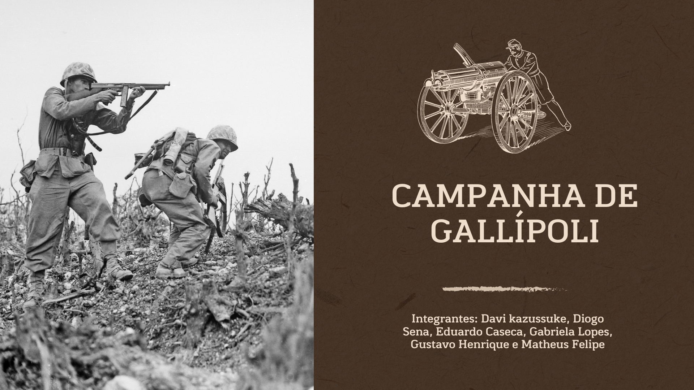

ATIVIDADE
Trabalho que creio que forai o melhor feito neste ano em Ciências Humanas.

Neste trabalho, meu grupo ficou responsável por explicar e detalhar como foi a Campanha de Gallípoli para os alunos presentes na sala.
Trabalho que creio que forai o melhor feito neste ano em Ciências Humanas.
Neste trabalho, meu grupo ficou responsável por explicar e detalhar como foi a Campanha de Gallípoli para os alunos presentes na sala.